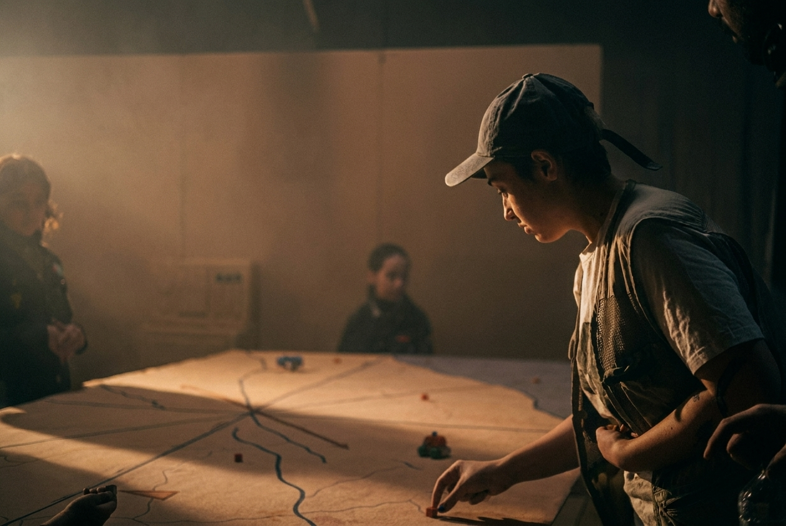
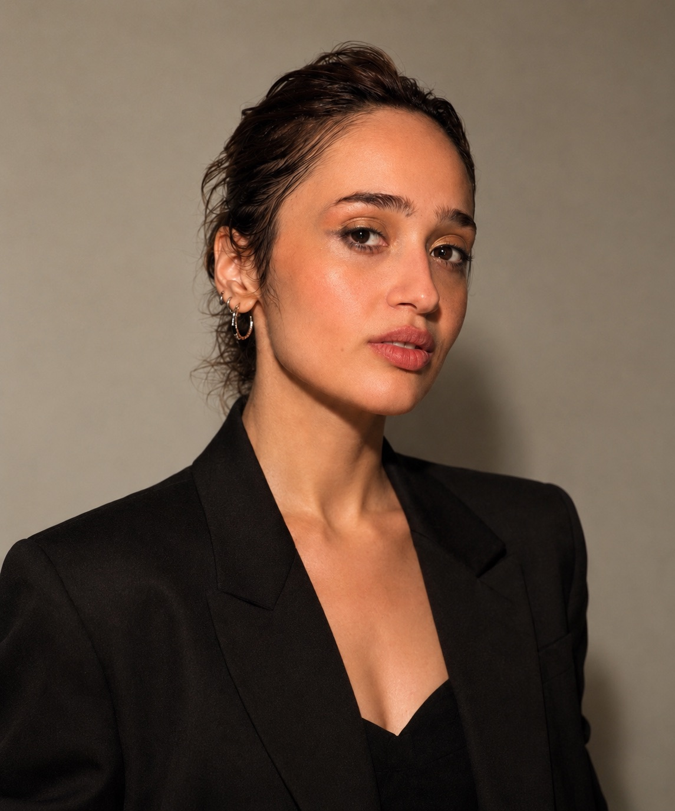
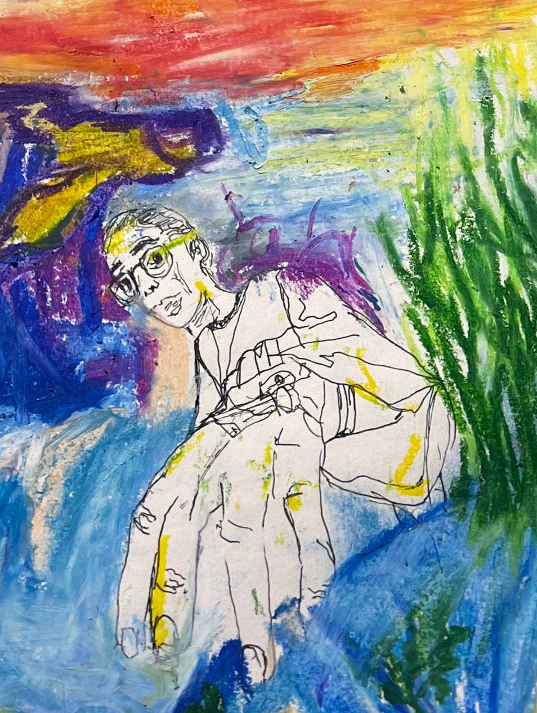
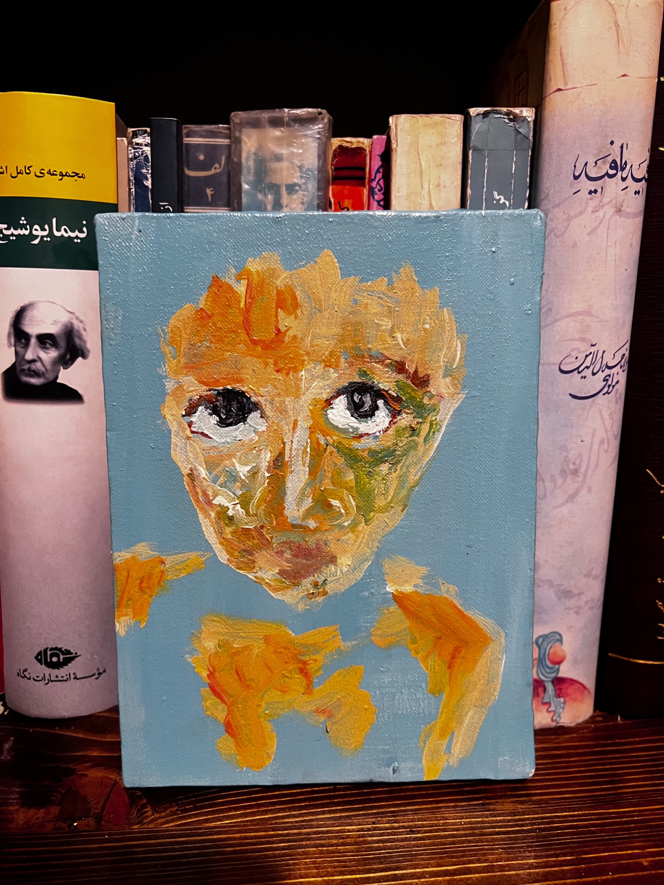
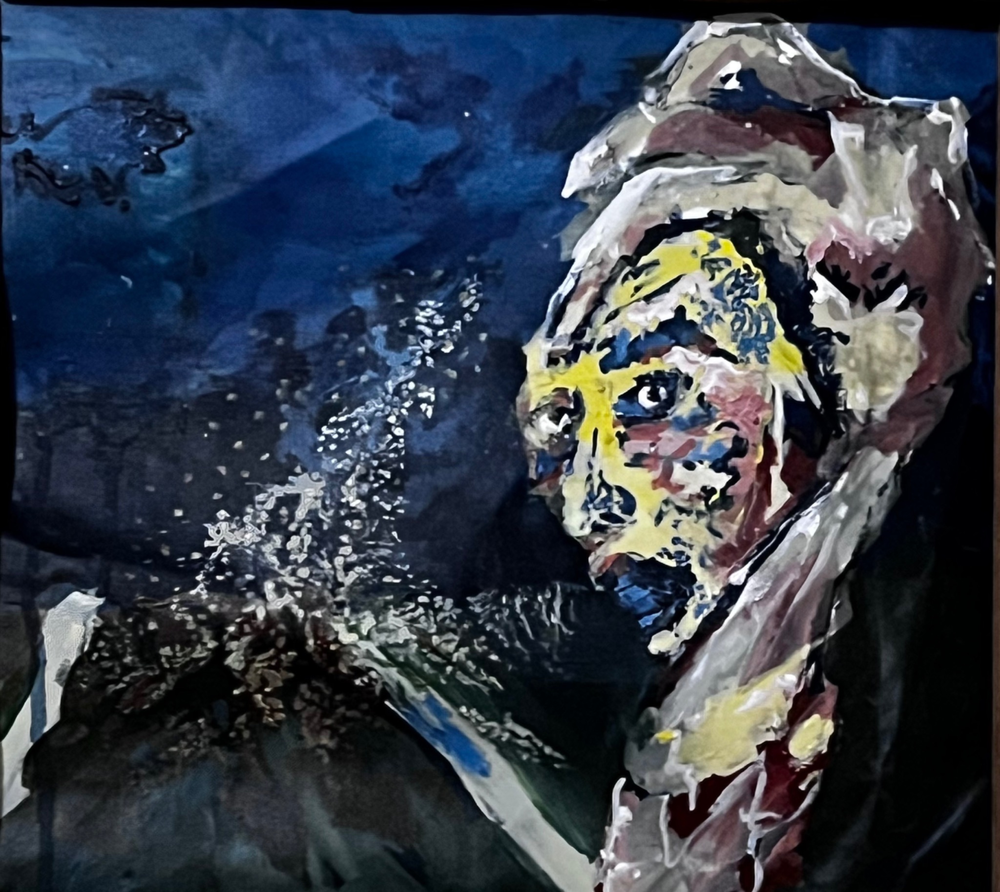
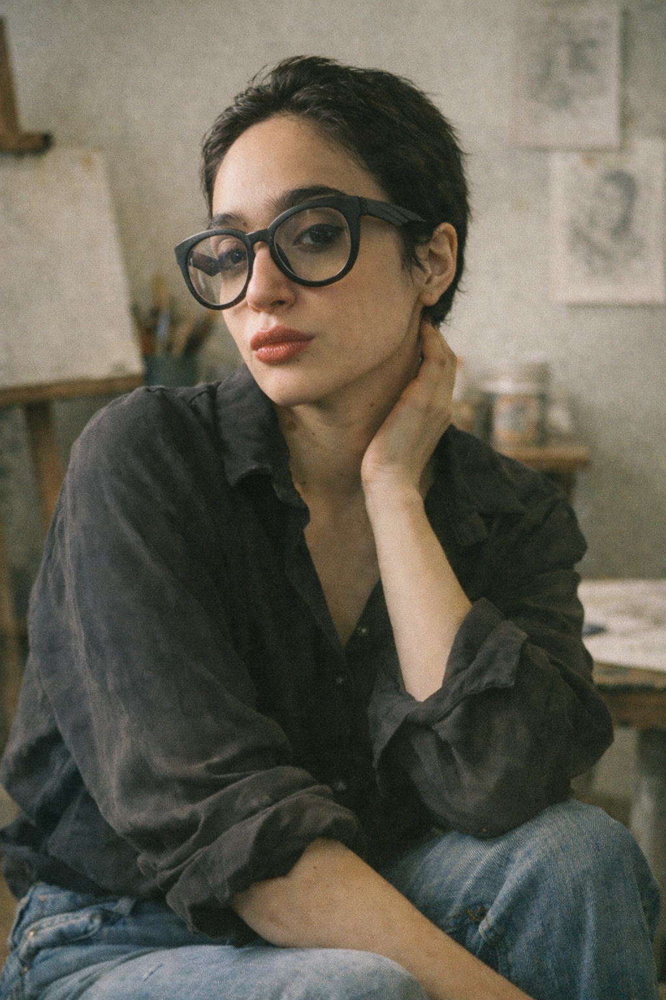

WRITER / RESEARCHER /
MULTIDISCIPLINARY ARTIST
SAHARNAZ
OMRAN
An ongoing practice across
language, memory, space,
body and image.

01 — PORTRAIT / 2026INDEPENDENT PRACTICE
TEHRAN / ELSEWHERE
TEHRAN / ELSEWHERE
01 / Selected Projects
Works across writing, performance, film, visual art and research.


02 / Fields of Practice
Multiple paths into
a continuous body of work.
01Performing ArtsTheatre · Performance · Movement↗
02Cinematic ArtsFilm · Production & Set Design↗
03Visual Arts & DesignPainting · Sculpture · Fashion · Visual Concepts↗
04Writings & InquiriesResearch · Essays · Journalism · Literary Writing↗
05Sound & MusicComposition · Sound Research · Field Recording↗

03 / ARCHIVEA LIVING INDEX
An index
of works
Projects, texts, images, performances, research and documentation.
Enter the archive ↗04 / Writings & Inquiries
TEXTS / QUESTIONS / RESEARCH
Language, memory, body, identity and the ways experience becomes form.
Explore writings ↗05 / About

Saharnaz Omran
Writer, researcher and multidisciplinary artist working across performance, image, sound, text and design.
Biography / CV / Collaborations ↗